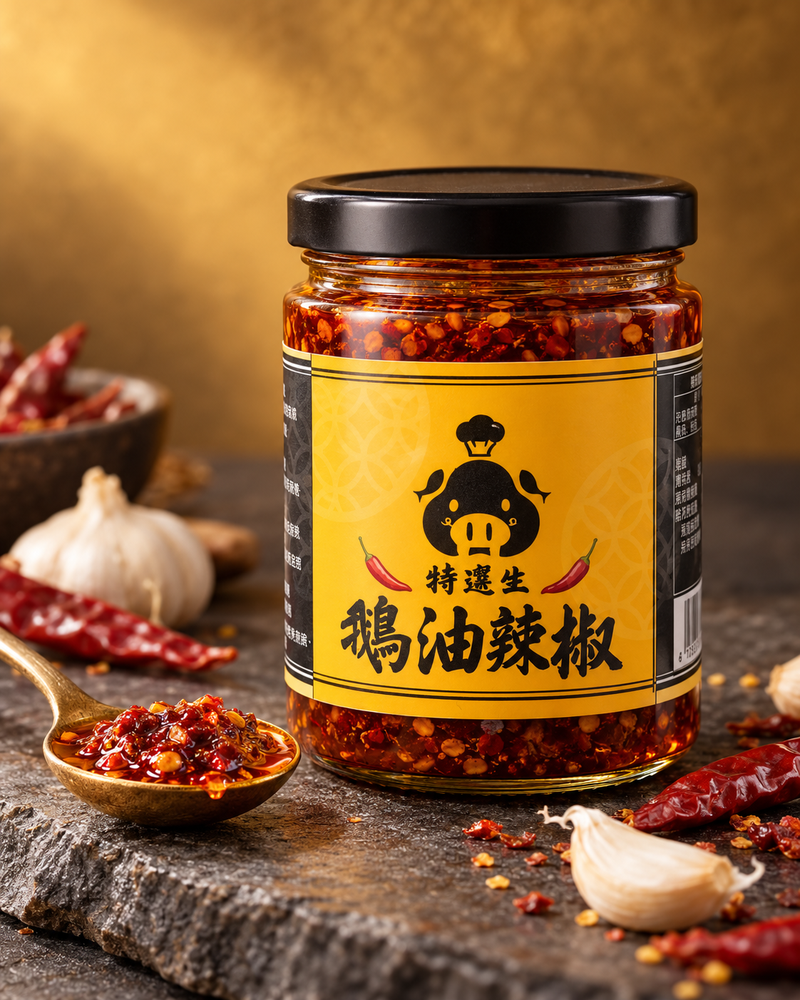
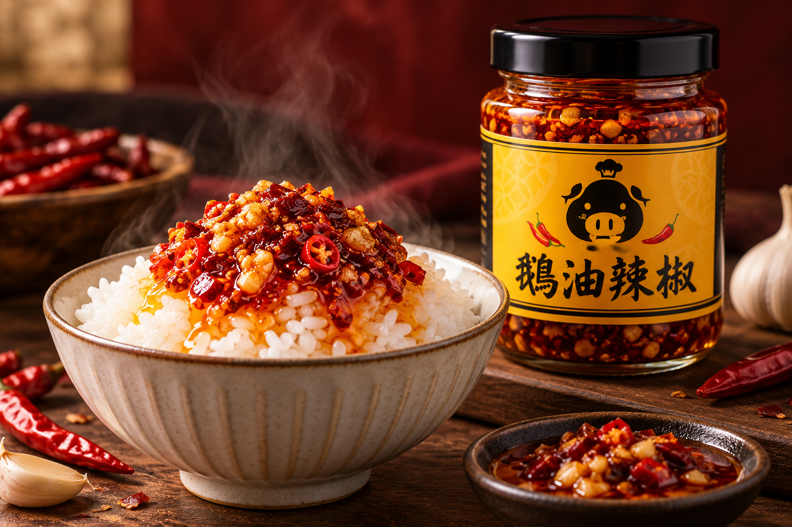

熱飯直接拌
米飯熱氣帶出鵝油香，少量開始拌勻，再依喜好加量。
豬鱻生・招牌拌醬
濃郁鵝油托起辣椒與蒜頭的香氣，一匙拌進熱飯，從第一口暖香到最後一口回甘，簡單的一餐也能吃得很講究。

AI 優化商品情境照・實際包裝以出貨為準
蒜香 鵝油香
FLAVOUR STORY
不是只追求辣，而是讓辣椒、蒜頭與鵝油各自有位置。入口先是暖潤油香，接著辣味慢慢展開，最後留下帶甜感的蒜香。
「一匙就讓白飯有了主角。」
天然食材會因季節與氣候略有差異，香氣、色澤與辣度以實際商品為準。
EVERYDAY DELICIOUS
從正餐到宵夜，一罐就能讓熟悉的味道多一點驚喜。
米飯熱氣帶出鵝油香，少量開始拌勻，再依喜好加量。
拌進剛起鍋的麵條，搭配蔥花、蛋或青菜，就是快速滿足的一餐。
拌豆腐、燙青菜或滷味，讓家常配菜多一層香辣尾韻。
PRODUCT DETAILS
以下資料依您提供的商品包裝標示整理。
本產品含有大豆及芝麻，不適合其過敏體質者食用。
| 項目 | 每份 | 每 100 公克 |
|---|---|---|
| 熱量 | 31.8 大卡 | 318.8 大卡 |
| 蛋白質 | 0.3 公克 | 3.3 公克 |
| 脂肪 | 2.3 公克 | 23.3 公克 |
| 飽和脂肪 | 0.6 公克 | 6.4 公克 |
| 反式脂肪 | 0.0 公克 | 0.0 公克 |
| 碳水化合物 | 2.3 公克 | 23.3 公克 |
| 糖 | 1.0 公克 | 10.3 公克 |
| 鈉 | 81.5 毫克 | 815.1 毫克 |
KEEP IT GOOD
未開封請置於陰涼處，避免陽光直射與高溫。
開封後請冷藏保存，並使用乾燥、潔淨的餐具取用。
開封後請儘速食用，風味與狀態以實際商品為準。
7‑ELEVEN PICKUP
完成訂購後，由官方 LINE 傳送賣貨便下單連結；依頁面選擇 7‑ELEVEN 取貨門市，出貨與到店通知以賣貨便系統為準。
實際運費、付款方式、寄件限制與到貨天數，依賣貨便訂單頁及 7‑ELEVEN 最新公告為準。
ORDER NOW
填好資料後可一鍵複製訂單，接著前往官方 LINE「豬鱻生嚴選部」完成確認。
今晚的白飯，交給它。
訂購鵝油辣椒 →